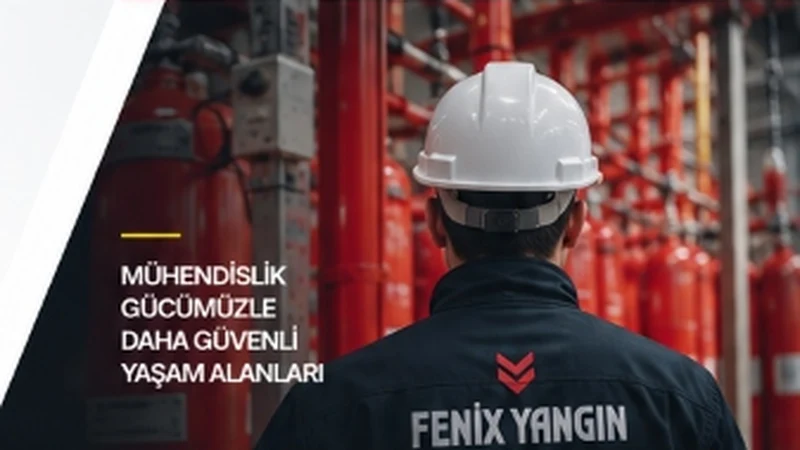

Yangın Güvenliğinde Daha Güçlü Yarınlar
Fenix Sistem Yangın Mühendislik Sanayi ve Ticaret A.Ş., 2011'den bu yana gazlı söndürme sistemleri alanında mühendislik çözümleri sunuyoruz.

MÜHENDİSLİK GÜCÜMÜZLE DAHA GÜVENLİ YAŞAM ALANLARI
Mühendislik ile Başlayan Yangın Güvenliği
Fenix Yangın, yangın risklerine karşı yüksek güvenilirlikte çözümler sunan, mühendislik temelli bir sistem entegratörüdür. Deneyimimiz, teknik bilgi birikimimiz ve güvenilir iş ortaklıklarımızla, yaşam ve iş sürekliliğini korumak için çalışıyoruz.
HakkımızdaUzmanlık
Yangın güvenliği alanında mühendislik bilgisi ve uygulama deneyimi.
Güvenilirlik
Ulusal ve uluslararası standartlara uygun, sürdürülebilir çözümler.
İş Birliği
Müşterilerimiz, iş ortaklarımız ve paydaşlarımızla uzun vadeli ilişkiler.
Sürdürülebilirlik
Daha güvenli ve dirençli yapılar için çalışıyor, gelecek nesilleri düşünüyoruz.
Riskten Çözüme, Uçtan Uca Mühendislik Süreci
Her projede aynı disiplinle çalışıyor, ihtiyacınıza en uygun çözümü analizden bakıma kadar tüm süreçlerde sizlerle birlikte hayata geçiriyoruz.
Analiz
İhtiyacın ve riskin anlaşılması
Mühendislik
Uygun sistemin belirlenmesi
Uygulama
Sistemin sahada uygulanması
Süreklilik
Bakım ve teknik destek

Deneyim, Yetkinlik, Güven
Fenix Sistem Yangın Mühendislik Sanayi ve Ticaret A.Ş., 2011 yılından bu yana gazlı yangın söndürme sistemleri alanında mühendislik, tedarik, uygulama ve teknik servis hizmetleri sunmaktadır.

Sizinle Çalışmaktan Memnuniyet Duyarız
Projeleriniz veya sorularınız için uzman ekibimizle iletişime geçin.
İletişime GeçTelefon
E-posta
Adres
Yıldırım Mah. Buğday Sok. No:16
Bayrampaşa / İstanbul